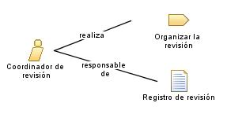

| Rol: Coordinador de revisión |
|
 |
| Este rol facilita las revisiones e inspecciones formales, garantiza que ocurren cuando es necesario, y verifica que se realizan en un estándar satisfactorio. |
| Conjuntos de roles: Roles generales |
|
Relaciones
 |
| Modifica |
|
| Uso del proceso |
|
Descripción principal
|
El rol Coordinador de revisión es
responsable de gestionar el proceso de revisión. Las revisiones se pueden generalizar en dos categorías principales:
revisiones de gestión del progreso del proyecto y revisiones técnicas de los productos de trabajo del proyecto. Este
rol es responsable de lo siguiente:
-
Garantizar que se efectúan las revisiones necesarias
-
Garantizar que los asistentes de revisión adecuados se incluyen y reciben notificación con los detalles de revisión
apropiados
-
Realizar la revisión de forma apropiada y eficaz
-
Garantizar que las tareas de seguimiento que resultan de la revisión se gestionan hasta su conclusión
Cuando se seleccione personal para este rol, debe tener en cuenta las habilidades necesarias para el rol y los
diferentes enfoques que puede adoptar para asignar personal al rol.
|
Personal
| Habilidades |
Es importante que la persona que desempeñe el rol Coordinador de revisión tenga la capacidad de facilitar que los
grupos de personas colaboren con eficacia. Idealmente, una persona que desempeñe este rol debe tener la confianza y el
respeto de todos los asistentes implicados en el proceso de revisión.
Las habilidades y conocimientos apropiados para este rol incluyen:
-
Habilidades de planificación y organización
-
Diplomacia, incluyendo habilidades de resolución de conflictos
-
Habilidades de facilitación
-
La capacidad de habilitar la colaboración productiva
|
| Propuestas de asignación |
Este rol se puede asignar de las formas siguientes:
-
Asigne una persona al rol Coordinador de
revisión según el guión para cada revisión. Este es un enfoque común para equipos pequeños y resulta
especialmente adecuado para equipos de cualquier tamaño en que el equipo tiene un grado elevado de confianza y
respeto. Este enfoque resulta especialmente adecuado cuando el equipo está formado por un grupo experimentado de
personas con un nivel de habilidad relativamente parecido.
-
En equipos pequeños o de tamaño medio, quien desempeña el rol gestor de proyectos también puede adoptar las
responsabilidades del rol Coordinador de
revisión. En algunas ocasiones, los líderes de equipo pueden adoptar este rol.
-
En equipos de mayor tamaño, el personal administrativo puede actuar como moderador de reuniones, liberando a los
expertos del dominio para que participen activamente en la revisión.
|
© Copyright IBM Corp. 1987, 2006. Reservados todos los derechos.
|
|